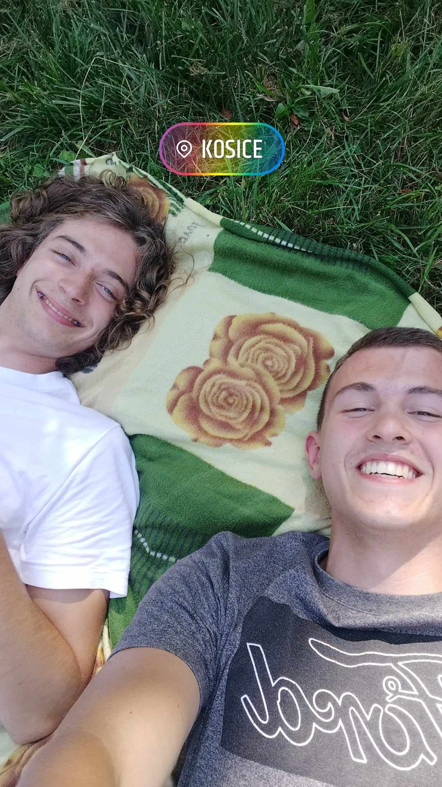
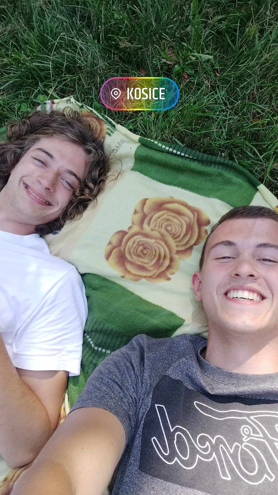

Certainly, my free time is diverse and filled with various hobbies. One of my greatest passions is hiking, where I can escape the daily hustle and immerse myself in the beauty of nature. It's a way for me to recharge and explore new places.
Music also plays a significant role in my life. The feeling of getting lost in a melody is unique, and it often helps me relax and unwind after a challenging day. I'm constantly fascinated by various music genres and artists.
Additionally, I regularly visit the gym, focusing on physical fitness and strength training. It's not only a path to better health but also a way to de-stress and unwind.
And then there's programming, which I consider a real challenge and a passion. Creating new projects and solving complex problems in the digital world fascinates me. It's not just a source of entertainment; it's an opportunity to develop my creative thinking and technological skills.

 
